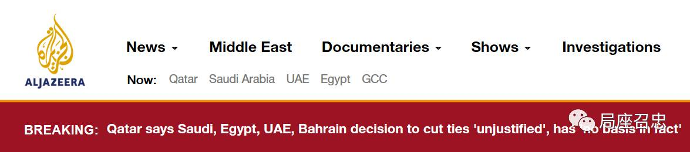
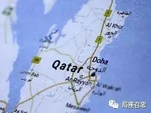
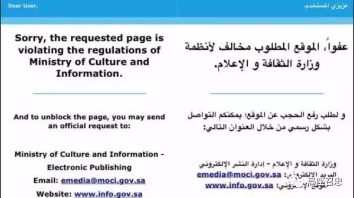
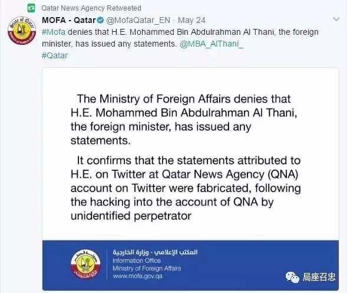
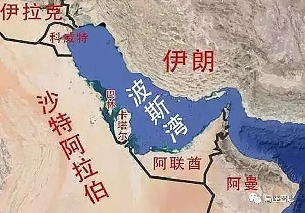

收录于合集

巴林 国家通讯社当地时间6月5日凌晨发表声明，宣布巴林与同为海合会成员国的卡塔尔断绝外交关系。理由是卡塔尔干涉巴内政和支持在巴恐怖主义活动。
巴林第一个宣布与卡塔尔断交。几分钟后，沙特，阿联酋，埃及采取了同样的措施：
沙特 国家通讯社当地时间6月5日凌晨发表声明，宣布与卡塔尔断绝外交关系。
阿联酋 同样在6月5日宣布与卡塔尔断绝外交关系，指责后者破坏地区安全局势。
埃及 也断绝了与卡塔尔的外交关系，指责卡塔尔支持恐怖组织。
同日，以沙特为首的 阿拉伯联盟 发表声明，宣布将卡塔尔排除出该组织。沙特还敦促所有“兄弟国家”都与卡塔尔切断外交关系。
一天之内，卡特尔遭邻国巴林、沙特、埃及和阿联酋4个国家的同时断交，卡塔尔回应称断交决定“不合理且毫无依据”。卡塔尔对其他国家的断交决定表示遗憾并予以谴责，称其行为“侵犯了卡塔尔的主权”。

半岛电视台回应
而就在刚刚， 也门 宣布与卡塔尔断绝外交关系，并支持停止卡塔尔参加在也门的联军活动。
突如其来的断交风波，打得我们措手不及，为了找出头绪，我们把时间轴往前推一下，看看都发生了什么？

我们知道，美国总统特朗普将上任以来的首个出访国家定在了沙特，还签订了1100亿美元的军贸大单。随后，在利雅得和沙特、阿联酋、埃及、卡塔尔等50多个阿拉伯伊斯兰国家的领导人举行了峰会。会上，特朗普号召阿拉伯国家领导人“孤立”伊朗。
而特朗普前脚刚走，卡塔尔通讯社旗下网站23日深夜播发了据称是埃米尔（国家元首）在出席卡塔尔军校第8批毕业生典礼时的讲话。讲话中说：伊朗是“不容忽视的伊斯兰强国”，并且“对伊朗怀有敌意是不智的”。并且在卡塔尔新闻社这篇报道里，卡塔尔埃米尔还说，卡塔尔与美国特朗普政府之间存在“紧张关系”。除此之外，卡塔尔新闻社的推特账号还援引卡塔尔外交部的话，宣布召回驻沙特、埃及、阿联酋、巴林和科威特大使。
消息一出，一片哗然，巴林、沙特、阿联酋和埃及自5月24日起封杀了半岛电视台和其他卡塔尔媒体。沙特报纸《欧卡兹》指责卡塔尔“脱离”海湾合作委员会（以下简称“海合会”）国家的队伍，站到了“敌人”的一边。

半岛电视台遭到封杀的页面
半岛电视台是在"9·11事件"之后声名鹊起，它多次率先播放本·拉登和其他基地组织领导人的录像声明，引起了全世界的广泛关注。因其在阿拉伯地区的特殊影响力，半岛电视台也被称为中东的"CNN"。
5月24日，卡塔尔政府通讯办公室主任表示，卡塔尔新闻社的网站“遭到了不明实体的黑客入侵”，以上纯属不实消息。

卡塔尔新闻社转发卡塔尔外交部声明截图
然而，沙特、阿联酋和巴林认为这样的解释不能令人信服，并坚称，关于与伊朗关系正常化的言论似乎确实出自埃米尔之口。因为伊朗方面和卡塔尔通话了。
据中东研究通讯《周观中东》援引德黑兰时报5月28日报道，伊朗总统鲁哈尼在与卡塔尔埃米尔塔米姆·本·哈迈德·阿勒萨尼的电话谈话中表示，反对特朗普中东之行提出的孤立伊朗政策，“我们的外交政策和原则是要和波斯湾睦邻国家保持合作关系，我们相信双方都可以依靠强大的意志力冲破阻碍”“这个地区的国家需要更多的合作和磋商，以解决地区危机，在这方面我们愿意合作”。
卡塔尔埃米尔塔米在与鲁哈尼的通话中表示希望与德黑兰加强联系。
当然，还不能证明这是以沙特为首的五国同时和卡塔尔断交的导火索。前驻伊朗、阿联酋大使华黎明就对记者表示，此次断交事件具体导火索尚不明确，其实沙特与卡塔尔两国貌合神离由来已久，暗藏着对海湾主导权的争夺。
据法新社报道，美国国务卿蒂勒森在多个海湾国家宣布与卡塔尔断交后呼吁，海湾国家应解决分歧，保持团结。
蒂勒森说：“我们当然鼓励有关各方坐在一起，解决分歧。”、“如果说我们(美国)能在他们解决问题方面扮演怎样的角色，那么我们认为海合会的团结很重要。”
并且，特朗普中东之行时，在利雅得，与卡塔尔埃米尔举行了会谈，特朗普肯定双方“很长一段时间内都是朋友”，并提到美国计划向卡塔尔出售大量军事设备。
美国总统特朗普2017年5月21日在利雅得与卡塔尔现任埃米尔塔米姆举行双边会晤。
卡塔尔，位于波斯湾西南岸的卡塔尔半岛上，国土面积只有1万多平方公里，常住人口550万左右。卡塔尔拥有相当丰富的石油和天然气资源，且天然气的总储量为全世界第三名，而国内生产总值的人均排名为世界第一名。

近年来，卡塔尔一直有着“小国大外交”的抱负，凭借石油经济和半岛电视台的媒体影响，举办世界杯等大型赛事，不断扩张其影响力。
卡塔尔曾经举办2006年多哈亚运会、2011年亚洲杯足球赛，获得了2022年第22届世界杯足球赛的举办权。以及正在看世乒赛的小伙伴们都知道的，在国际乒联职业巡回赛中，有卡塔尔公开赛。
卡塔尔不安于小国的地位，常在一些问题上充当“调解人”的角色，想要发挥更大作用。
截至目前，事件仍在发酵。
当然了，断交事件在中东不是第一次发生。此前， 沙特阿拉伯、阿拉伯联合酋长国和巴林三国曾于2014年3月5日发表联合声明，宣布从即日起召回各自驻卡塔尔大使，以抗议卡塔尔干涉海湾阿拉伯国家合作委员会（海合会）成员国内部事务。
三国在联合声明中说，2013年11月，卡塔尔埃米尔塔米姆与沙特国王阿卜杜拉、科威特埃米尔萨巴赫在沙特首都利雅得签署海合会成员国之间互不干涉内政的协议。但是三个月过去，卡塔尔并未履行协议。
本文来源： 局座召忠
筛选：早安老师
编辑：里仝
您可能还会喜欢：